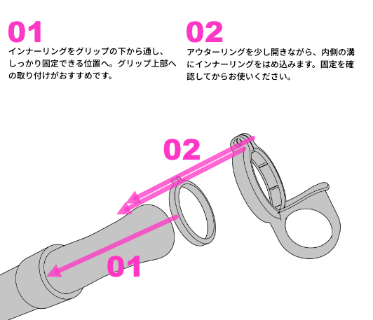

盛り上がる曲で、
思いきり拍手したい。
手のひらがふさがって、気持ちに拍手が追いつかない。
ペンライトを持ったまま、拍手できる。
握る手をほどいて、ライブの一瞬にまっすぐ。
指に通して支える、ライブのための実用アクセサリー。
PENLARINGを予約する ↗ペンライトを握ったままだと、やりたいことに一拍遅れる。
その小さなもどかしさが、ライブへの集中を途切れさせてしまうことも。
手のひらがふさがって、気持ちに拍手が追いつかない。
持ち替えに手間取って、大切な瞬間を見逃したくない。
落とさないように握り続ける緊張から、少し自由に。
「持ち替える」ひと手間を、ライブの中からなくしたい。
ペンライトはそのまま。手は、もっと自由に。「もっと早く、
この拍手を届けたい。」
声を出せなかったあの頃。拍手は、ステージへ感情を届ける大切な手段でした。
両手にはペンライト。そんな気づきから、PENLARINGは生まれました。
人差し指にリングを通してペンライトを支える設計。手のひらを握りっぱなしにしない持ち方を提案します。
拍手、双眼鏡、うちわ、スマホ。やりたいことのたびに、ペンライトを置いたり持ち直したりする手間を減らします。
拍手を届けたい一瞬に、持ち替える時間を挟まない。ライブの感動を楽しむために生まれた道具です。
ペンライトは指にキープして、両手で双眼鏡を。
ハンカチやティッシュも、持ち替えの手間を少なく。
曲に合わせて、すぐにペンライトを振れる手元へ。
お使いのペンライトの形状とグリップ径に合うタイプをお選びください。

グリップの下から通し、しっかり固定できる位置に取り付けます。グリップ上部への取り付けがおすすめです。
同様に下から通し、少し開きながら溝にインナーリングをはめ込みます。
しっかり固定できていることを確認して完成です。初めて使う場合は明るい場所で事前に練習してください。
インナーリングは予備が1個付属します。
グリップ形状や径によって装着できない場合があります。
開発者自身がライブで試して感じたことを紹介します。
※使用感には個人差があります。
「指を通して持てるので、グリップが短めのペンライトでも持ちやすく感じました。ストラップより持ち直しが早く、力を入れて握り続けなくていいのも気に入っています。」
開発者の使用感サイズと対応グリップ径を確認して、
あなたのペンライトに合う組み合わせを選んでください。
予約受付状況・対応サイズ・発送時期はBOOTHショップの最新情報をご確認ください。